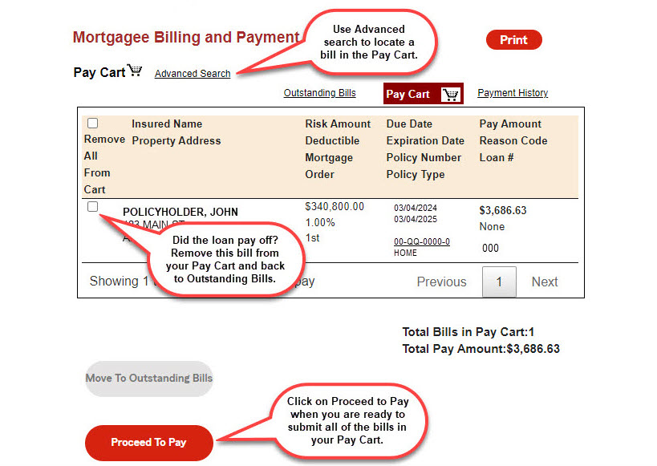
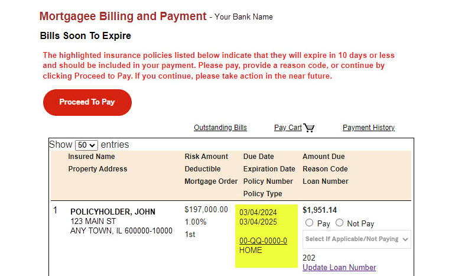
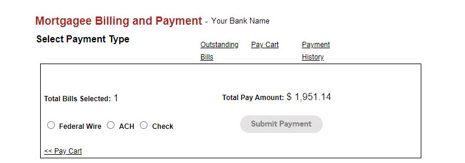
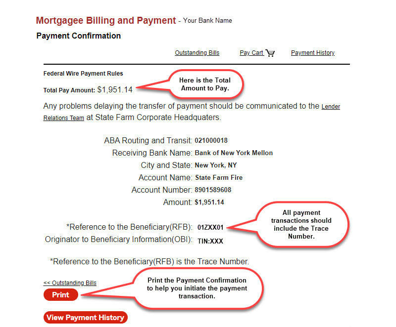

Enter the Pay Cart by clicking the Pay Cart link. While in the Pay Cart you can:
The Pay Cart is used to collect the bills that will be paid when you Proceed to Pay.
The Pay Cart will also include those items you selected not to pay and have provided a reason code.
Use the Advanced Search link to find a payment.
If you need to change a bill selected for payment, first move the bill to the Outstanding Bills screen. If necessary, you can move all of the items to the Outstanding Bills screen.
When you decide to initiate payment, click the Proceed to Pay button. The system will bundle all of the items from the Pay Cart and include those Informational Bills with due dates equal to or less than the day you pay. This constitutes your Payment Bundle.

The Bills Soon To Expire screen will only appear if there are Outstanding Bills that haven't been moved to the Pay Cart which are past their due date or are coming due in the next 10 days.
We display the Bills Soon To Expire screen so you won't inadvertently miss any bills that are due.
The Bills Soon To Expire screen has the same functionality as the Outstanding Bills screen.
You can choose to continue without adding any of the items soon to expire by clicking Proceed to Pay.
Or you can choose to add these bills to your payment and the system will adjust the number of items in the Or you can choose to add these bills to your payment and the system will adjust the number of items in the Pay Cart and the Total Amount Due.

The Select Payment Type screen allows you to inform us of the payment method you plan to use.
Once you have indicated how payment will be sent, click the Submit Payment button for further instructions.
Please note that we do not initiate a banking transaction for you.

Each Payment Type, whether FEDWIRE, ACH or paper check has a set of instructions.
We understand that you may not be responsible for initiating the payment to us. The Payment Confirmation screen creates a set of instructions you can print and provide to your accounting department or another department responsible for initiating the payment transaction.
This completes the billing and payment process however, you can continue by clicking the View Payment History button.
